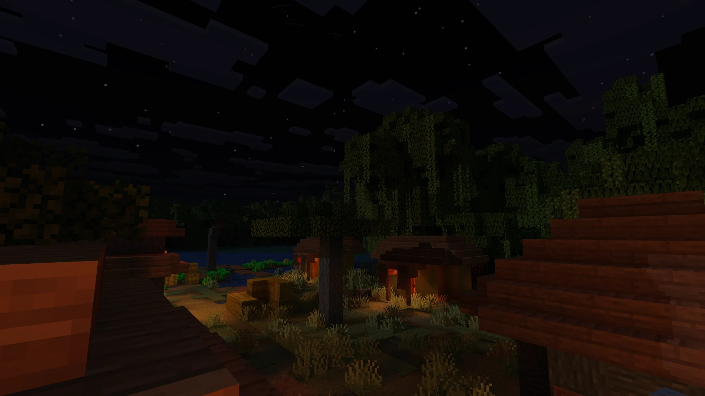

Coherent Minecraft Lighting
Lucuma is a lighting mod: another take on Minecraft’s light, aiming to respect both the world’s geometry and the game’s look. Meant to be the successor to vanilla lighting, it keeps Minecraft’s visual language: textures, colours and biome tints stay the game’s own, and light follows the same pixel grid as the textures, coherent with the design. It adds depth and colour to the world without imposing a new style on it.
Light is computed at the resolution you set, down to every pixel of a block’s texture. Nothing is estimated, upscaled or denoised: what you see is exactly what was computed. Every light is part of one unified system: directional light from the sun and moon, point/block lights like torches, lanterns, lava and glowstone. Coloured light, bounced light and light transmission all follow the same rules, allowing for modern lighting features while being performant.
A Fabric mod: no Iris, OptiFine or shader pack needed. Built to run on modest hardware; Lucuma is in beta and performance work is ongoing.
Windows installer (MSI). SHA-256

Beta releaseInstall
Requirements
| Minecraft | Java Edition 26.2 or 26.3 |
|---|---|
| Fabric Loader | 0.18.4 or newer for 26.2; 0.19.3 or newer for 26.3 |
| Fabric API | Required. The Manager adds the matching version if it is missing (0.158.0 for 26.2, 0.162.0 for 26.3). |
| Java | 25, as used by Minecraft 26.x. The official launcher includes it. |
| Graphics | A GPU with OpenGL 4.3. Where Minecraft offers a choice, set Options › Video Settings › Graphics API to Prefer OpenGL; under Vulkan Lucuma stays off. |
| Installer | Lucuma Manager, Windows only. It is currently the supported way to install Lucuma; it needs no separate Java. |
Steps
- Install Fabric Loader for your Minecraft version with the installer from fabricmc.net, and start that profile once. The Manager does not install Fabric.
- Download and run the Lucuma Manager installer.
- Close Minecraft. In the Manager, select your Fabric instance. Profiles of the official launcher and
the Microsoft Store launcher are detected; for other launchers, choose the instance folder or its
modsfolder. - Press Install. The Manager downloads the release, checks its signatures and SHA-256, places the
Lucuma jar in
modsand adds Fabric API if it is missing. - Start Minecraft with that profile.
Manager actions
- Update
- The Manager checks for a new release each time it opens. The Manager updates itself the same way.
- Repair
- Restores a missing or damaged Lucuma jar from a verified release.
- Roll Back
- Returns to the previous verified release kept on disk. Works offline.
- Uninstall
- Settings › Manage Installation. Removes only the Lucuma jar; Fabric API, other mods, worlds and settings stay unless you choose to remove Lucuma's settings too.
- Create report
- Collects versions, hardware, logs and Lucuma settings into local text files for a bug report. Nothing is uploaded.
The Manager never replaces other mods to make Lucuma fit. A conflicting Fabric API is kept and reported. Close Minecraft before any action that changes its mods.
Current release
Lucuma 0.4.4 2026-10-14
Fixes - Worlds no longer freeze while loading on NVIDIA graphics cards. The first time a new version starts, the game stays responsive and uses vanilla lighting for a short while until Lucuma's lighting is ready. - Shadows from torches and other block lights are now exact at the edges of blocks, in caves too. Improvements - The first launch after an update gets Lucuma's lighting on screen sooner.
Privacy: no account, no telemetry, no background service. The Manager contacts only this site, and only to download signed releases. The mod sends nothing.
Using Lucuma
Basics
- First start
- The first time a new version runs, the world loads with vanilla lighting for a while until Lucuma's lighting is ready. The game stays playable meanwhile; later starts are faster.
- Settings
- Press F6 in game. The key can be changed in Options › Controls › Key Binds, under Miscellaneous. Changes are saved when you press Done.
- Off switch
- Lucuma: on / off in the settings returns vanilla lighting without restarting.
- Settings file
config/lucuma.jsonin the instance folder. Delete it with the game closed to return to the defaults.
If something is wrong
- Lighting looks vanilla
- On a first start, wait until Lucuma's lighting appears. Otherwise check that Lucuma: on is set and that the Graphics API is OpenGL.
- Low frame rate
- Lower Radiosity quality and Sun shadow detail distance, and set Far lighting to per block past 64. Render distance affects Lucuma's cost as it does vanilla's.
- Bug or crash
- Describe it on Discord. Use Create report in the Manager and send only the files you are asked for. The report hides your Windows user name by default; review the files before sharing them.
Settings reference F6 menu, main page
| Setting | Range | Effect |
|---|---|---|
| Sun and sky | ||
| Brightness | 0.1 – 6 | Overall exposure of the lit image. |
| Sunlight | 0 – 8 | Strength of direct sunlight and moonlight. |
| Sun tilt | −45° – 45° | Leans the path of the sun and moon north or south, and every shadow with it. 0 is Minecraft's path straight overhead. |
| Tilt dims daylight | on / off | On: a tilted sun stands lower at noon, so the day is slightly dimmer. Off: daylight stays as bright as with no tilt. |
| Skylight | 0 – 8 | Fill light from the sky in shadow. Lower values give daylight more contrast. |
| Distant skylight | 0 – 1 | Sky light on terrain beyond the lit area around you. |
| Water depth dimming | 0 – 0.6 | How quickly water darkens sunlight and skylight with depth. 0 leaves water as clear as air. |
| Block light | ||
| Block light | 0 – 8 | Brightness of torches, lava, lamps and every other light block. Reach is unchanged. |
| Light source glow | 0 – 2 | Brightness of a light's own visible surface. The light it casts is unchanged. |
| Block light shadows | 0 – 1 | Sharpness of block lights' shadows. Low adds soft fill light; high keeps full shadow contrast. |
| Block light reach | 0.1 – 6 | How far block lights reach. |
| Bounced light | 0 – 4 | How much light bounces off surfaces. |
| Colour | ||
| Light colour | 0 – 1 | 0 gives white light, 1 each light's own colour. Less colour also makes light brighter. |
| Light hue | 1 – 3 | How deep a light's hue reads on lit surfaces. Lower is paler; 2.2 is the flame's own colour. |
| Texture colour | 0 – 1 | How much of Minecraft's texture and biome colour is kept. |
| Look | ||
| Smoothness | 0 – 1 | Softens lighting across block edges. |
| Contact shadows | 0 – 1 | Darkening where surfaces meet. |
| Lighting resolution | off, 8, 16, 32, 64 | Lighting texels per block edge. 16 matches the block textures; off gives a smooth gradient. |
| Quality and cost | ||
| Bounce mode | Radiosity / Classic | How bounced light is computed. Radiosity is the default. |
| Radiosity quality | 8, 16, 32, 64 rays | Rays per surface for bounced light. Fewer rays cost less. |
| Sun shadow detail distance | 0.3 – 1 | Fraction of the render distance that keeps full sun-shadow detail. |
| Far lighting | exact, past 128 / 96 / 64 | Beyond this distance, direct light is resolved per block instead of in full detail. |
The Advanced… page holds development controls and debug views. They are not needed for normal play.